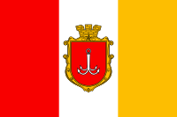

Odesa
Name and Early history
Odesa is the third most populous city and municipality in Ukraine and a major seaport and transport hub located in the south-west of the country, on the northwestern shore of the Black Sea. Odesa is sometimes called the "Pearl by the Sea", the "Southern Capital", "Odesa-mama" and "The Humour Capital", as well as "Southern Palmyra". In 1795 the city was named Odessa in accordance with the Greek Plan of Catherine the Great. Odesa was the site of a large Greek settlement no later than the middle of the 6th century BC (a necropolis from the 5th–3rd centuries BC has long been known in this area). Some scholars believe it to have been a trade settlement established by the Greek city of Histria. Whether the Bay of Odesa is the ancient "Port of the Histrians" cannot yet be considered a settled question based on the available evidence. Archaeological artifacts confirm extensive links between the Odesa area and the eastern Mediterranean.